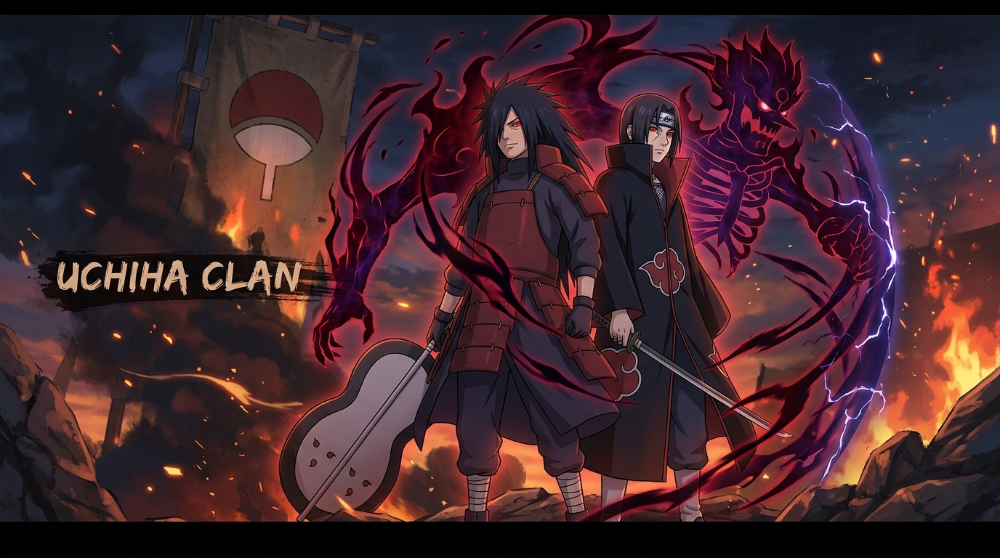
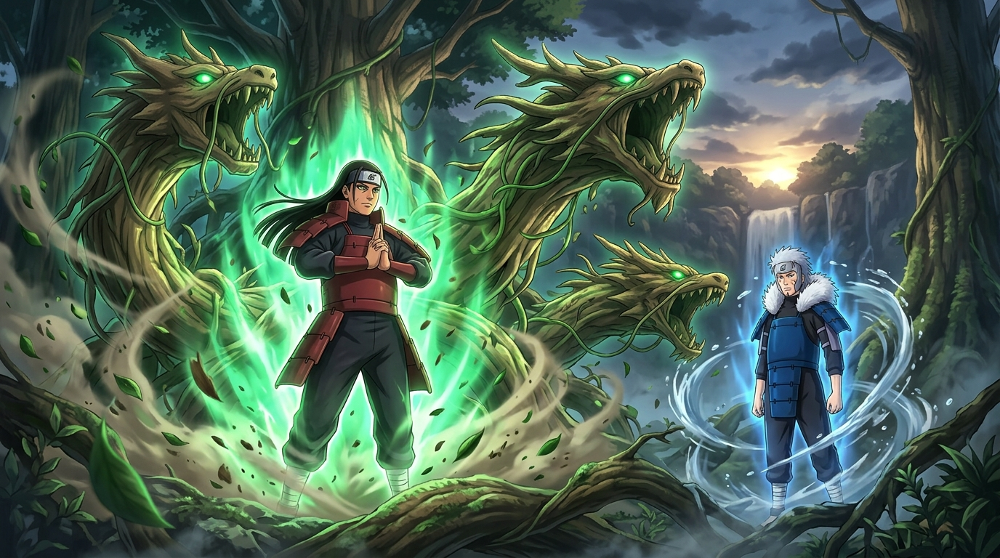
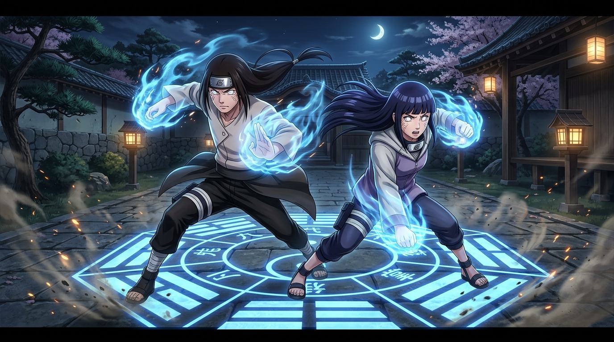
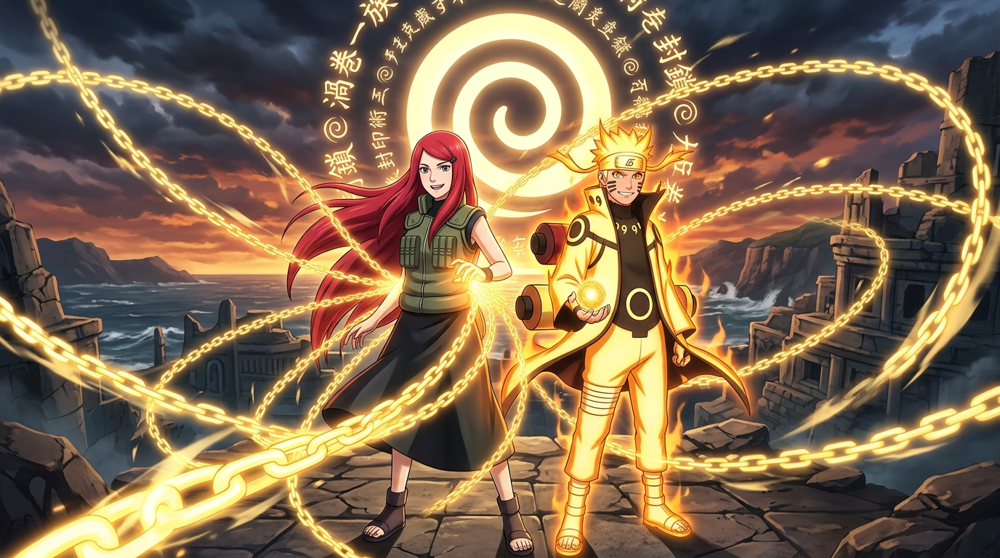
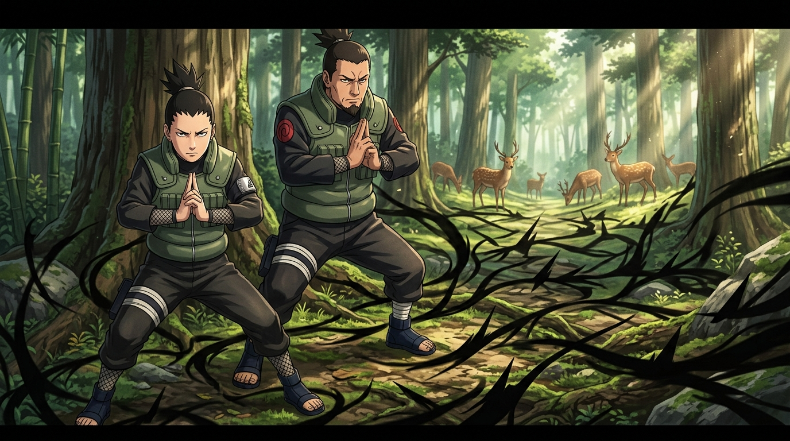
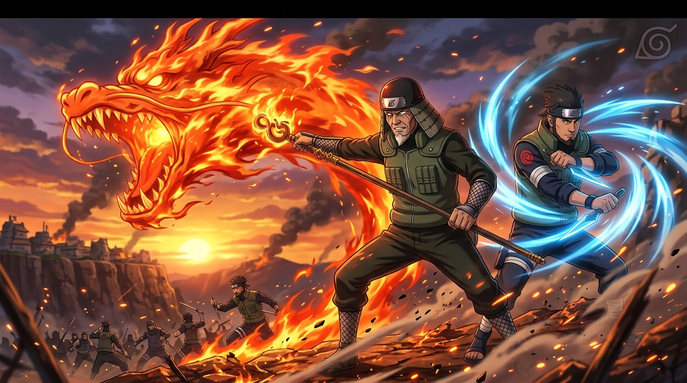

NOBLE LINEAGES, INHERITED TECHNIQUES & SHINOBI HERITAGE






Descendants of Indra Ōtsutsuki, the Uchiha wield the legendary Sharingan dōjutsu. Renowned for unparalleled fire release techniques, genjutsu mastery, and the potent Susanoo avatar awakened through profound emotional bonds.
Descendants of Asura Ōtsutsuki and co-founders of Konohagakure. Celebrated as the "Clan with a Thousand Skills," they mastered all chakra natures and inherited the unbreakable Will of Fire, with Hashirama awakening legendary Wood Release.
Direct descendants of Hamura Ōtsutsuki possessing the pure Byakugan eye. Their near-360° chakra perception enables the lethal Gentle Fist (Jūken) martial art, closing tenketsu chakra pathways with surgical precision.
Distant blood relatives of the Senju hailing from Uzushiogakure. Renowned for boundless life force, immense chakra reserves, and forbidden Fūinjutsu sealing chains capable of binding even Nine-Tails tailed beasts.
Famed for their genius intellect, herbal medicinal wisdom, and sacred deer sanctuary. The Nara command Hiden Shadow Manipulation ninjutsu, serving as top military advisors and Hokage strategists across generations.
One of the earliest clans to pledge allegiance to the newly founded Leaf Village. Famed for fierce Fire Release mastery, monkey summons, and the versatile multi-nature genius exemplified by the "Professor" Hiruzen Sarutobi.
GENETIC ANOMALIES & SECRET HIDEN TRANSMISSIONS PASSED THROUGH NOBLE SHINOBI BLOOD
Ancient dōjutsu originating from Kaguya Ōtsutsuki. Grants kinetic tracking, jutsu replication, and 360-degree chakra tenketsu sight.
Simultaneous chemical fusion of two primordial chakra natures to manifest living flora, organic constructs, or impenetrable crystalline ice mirrors.
Non-elemental ancestral formulas guarded strictly within clan scrolls. Encompasses shadow binding, telepathic soul transfer, and calorie expansion.
Symbiotic masters who house parasitic Kikaichū insects within their bodies, draining enemy chakra in silence.
Wielders of the Yang Release Multi-Size Technique, converting body calories into crushing physical force and chakra wings.
Canine tracking specialists bonded with canine Ninken partners from birth, executing lethal Man-Beast Taijutsu.
Sensory telepaths and espionage experts commanding Mind Body Switch techniques to hijack enemy consciousness.
Extinct battle-hungry Kirigakure lineage wielding the rare Shikotsumyaku ability to manipulate skeletal bone density at will.